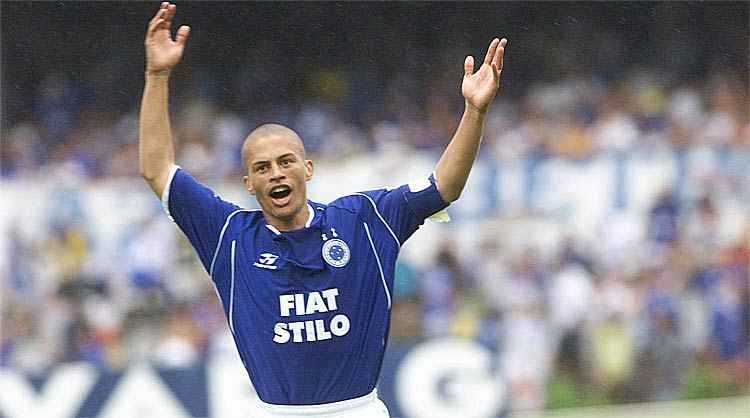

ALEX
Em 2001, o meio-campista chegou com grandes expectativas. No entanto, aquela seria a sua temporada mais decepcionante com a camisa do time celeste. A diretoria do Cruzeiro, naquela época, tinha a intenção de montar um time de destaque, trazendo Alex, que era destaque no Palmeiras, além de outros craques, como Edmundo e Freddy Rincón, foram contratados, mas o time não conseguiu fazer uma boa campanha dentro do Campeonato Brasileiro daquela temporada. O Cabuloso fez uma campanha sem muito brilho, inclusive quase foi rebaixado. Por parte do jogador, que chegou para ser maestro, pouco foi visto. Essa situação se deu por conta de um processo na Justiça e na Fifa, contra o Parma, que era dono dos seus direitos. Na época, ele conseguiu se desvincular do time italiano, mas, em vários momentos, novidades no caso surgiram e ele teve limitar cassada em vários momentos sendo impedido de atuar pela equipe azul.
Na reta final do Campeonato Brasileiro de 2002, Alex chegou após ter a sua renovação de contrato bancada pelo então treinador Vanderlei Luxemburgo. Nesse caso, inclusive, a confiança do técnico era tão grande que ele se comprometeu a arcar com valores do salário do meio-campista caso ele não rendesse. Assim, o Cabuloso do Talento Azul e companhia entrou na temporada de 2003 disposto a fazer bonito. Lá, começou a campanha que levou para um dos anos de maior destaque da história do Cruzeiro. A Tríplice Coroa do cenário nacional.
Alex, conhecido como o "Talento Azul", teve uma trajetória exitosa no Cruzeiro. Ele conquistou a Copa do Brasil de 1998 e a Copa Mercosul de 1998. Em 121 jogos, Alex marcou 64 gols e distribuiu 61 assistências, incluindo a Tríplice Coroa de 2003, que incluiu o Campeonato Mineiro, o Brasileirão e a Copa do Brasil